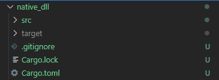

Rust 编译DLL
预备命令：
创建库：cargo new --lib native_dll
编译库：cargo build --release
指定目标平台：cargo build --target=i686-pc-windows-msvc [--release]
项目结构如下图所示：

添加依赖项
因为是编译为DLL 文件，这里仅添加最基本的windows-rs 依赖：
[package]
name = "native_dll"
version = "0.1.0"
edition = "2021"
# See more keys and their definitions at https://doc.rust-lang.org/cargo/reference/manifest.html
[lib]
name = "native_dll" # 项目类型是动态链接库
crate-type=["cdylib"]
[dependencies]
[dependencies.windows] # 添加windows-rs 依赖
version = "0.39.0"
features = [
"Data_Xml_Dom",
"Win32_Foundation",
"Win32_Security",
"Win32_System_Threading",
"Win32_UI_WindowsAndMessaging",
]lib.rs 源码
生成普通的动态链接库很简单，但是我们在做项目时，有时会需要在动态链接库加载时就执行某些动作，例如弹出对话框、开启子线程等。这时候我们需要为DLL 添加入口函数：
use windows::{
s,
Win32::UI::WindowsAndMessaging::{MessageBoxA, MB_OK},
};
#[no_mangle] // 禁止编译器修改函数名称
pub extern "C" fn add (a: u8, b: u8) -> u8{ // 函数将被编译为C 语言风格
let s = a + b;
s // s 是windows-rs 中的宏命令，用于字符串处理
}
#[allow(unused)]
#[no_mangle]
pub extern "system" fn DllMain(_inst: isize, reason: u32, _: *const u8) -> u32 {
// win32 中应当用extern "stdcall"
if reason == 1 {
unsafe {
MessageBoxA(None, s!("Ansi"), s!("Caption"), MB_OK);
}
}
1
}
需要注意的是，DllMain 方法并不是必须的，很多情况下也不会用到。
在Python 中调用
在Python 中可以通过ctypes.cdll.LoadLibrary 方法调用DLL 文件，但是应该用绝对路径或者是.、.. 开头的相对路径：
from ctypes import*
# give location of dll
mydll = cdll.LoadLibrary("..\\native_dll\\native_dll.dll") # 自动执行DllMain 方法
print(mydll.add(1,2)) # 打印3 注意：
如果Python 的与DLL 的位数不一致，则会报OSError: [WinError 193] %1 不是有效的 Win32 应用程序。的错误。
所以在通过Python 调用DLL 时要多加注意。
关于进程间通信的Idea
关于Rust 与Python 之间的互调，个人觉得还是通过进程间通信实现比较通用。实在没办法在将Python 打包成独立可调用的动态链接库 😦
📅 2022-08-15 Aachen